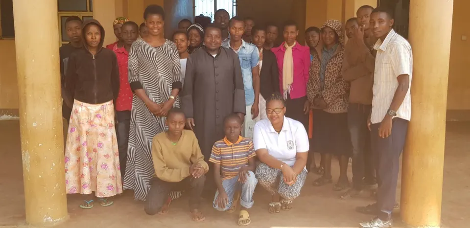
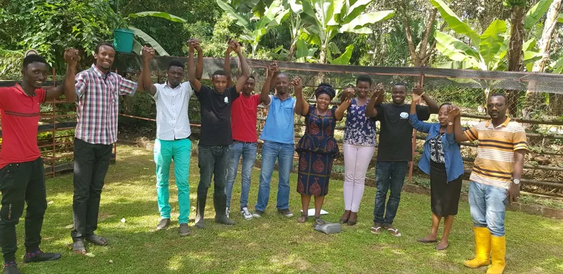
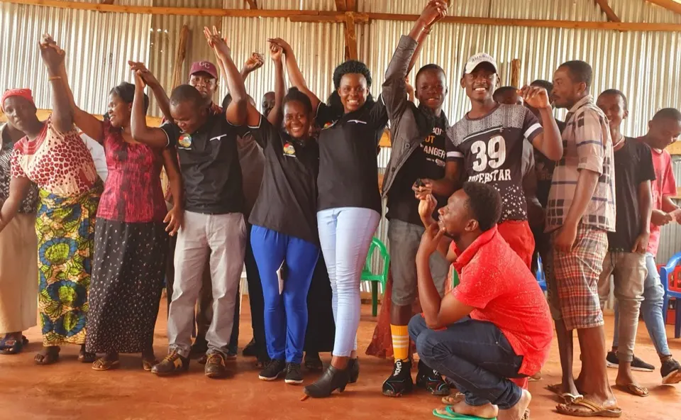
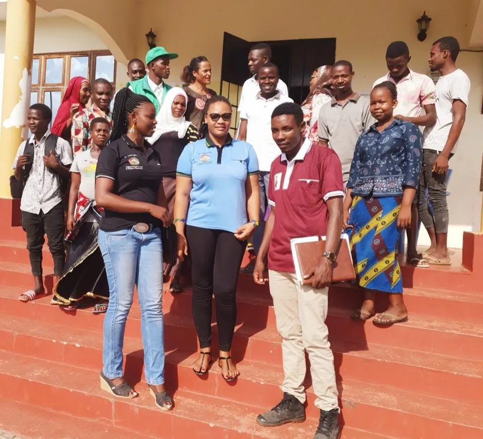
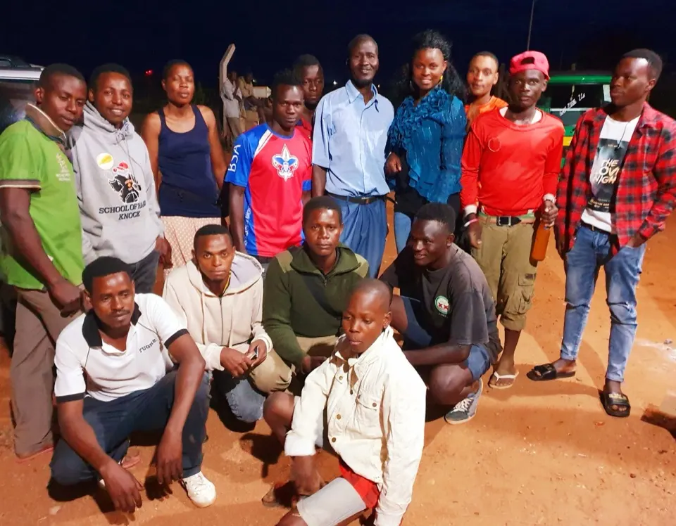
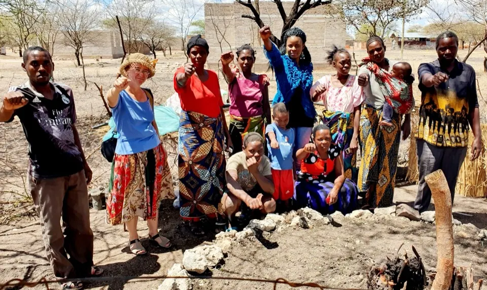
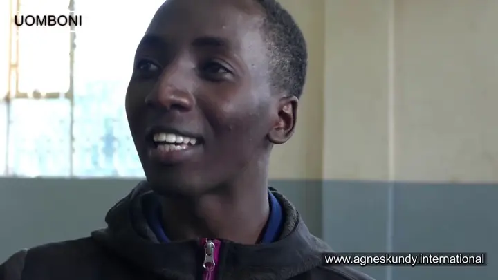

Agri-Connect Tanzania
Youth groups
a-ct youth groups in tanzania
YOUTH GROUPS UNDER AGRI-CONNECT TANZANIA
Uomboni Youth Group - 17.9.2018
The first meeting with Young people was done in Marangu Uomboni and it became the first group organized under A-CT. The group started with 30 people who are still active members. The group have been the first one to be considered on the micro credit program. Four small projects have been supported under Micro credit system.
Youth groups under agri-connect tanzania


Karamsingi Youth Group - 22.9.2018
This was the second group to be established with 17 members who kept increasing to 25+-. This is the first group to supported by Micro credit system to the group. And the credits were returned back on time. lives have been improved in a way that motivates to keep going.
Kilala Youth Group 20.9.2028
This group was established on the secomd meeting the day everybody was clear of the idea. The grouüp is stiöll active and most of them works on fish invstment.

Njiapanda Himo Youth group - July 2019
This group came into being after they heard about Agri connect Tanzania on media platforms Youtube and Face book. then they called us and we arranged a day for a meeting. after they were clear them themselves established this group and it is stil active.


Chekereni Youth group - July 2019
This grouü was also after people in Njiapand hears about A-CT on media platforms. It is one of the group has benefited fro our micro credit system.
Zinga Youth group -
This group was organized by tone of the A-CT ambasador who is from the very first team of 50 youth we equiped each other on whatsup group. It has also benefited from our mictro credit the credit whic was provided to the group. It is located in Zinga Bagamoyo. The group ambassador is called Efraim Rubasha.



Agri-Connect Tanzania Team - Northern Zone
The team has 8 members who are currently volunteering. The team members are equiped to support the project anywhere in Tanzania they may be requested. But basically they belong to Northern Zone that covers Kilimanjaro, Arusha, Tanga, Babati and Manyara. The team is determined to work as an example to the rest other groups.
The team resides in the compound where Agri-Connect Tanzania headquator offices are. They are involved in vegetable production and on chicken keeping. all intended for business but also for example other young people from other groups to see and learn.

MORE ABOUT THE MEETINGS DONE WITH THE GROUPS Please follow us on Youtube

Opens YouTube in a new tabI believe whatever one does out of own willingness and motivation does it better. in establishimg the groups, young people are given chance to decide it on themselves and agree on their own leaders. the only leader decided by the A-CT Management is the Group Ambassadors. So the process starts by A:CT team vising younth in a certain community and share the idea and leave them room to decide. the going in the begining was called by A-CT organizing the youth to gather and have a meeting with, but later on after A-CT updates are available on media platforms, yoputh call and request to be attended and A-CT made schedules to attend meetings with them.